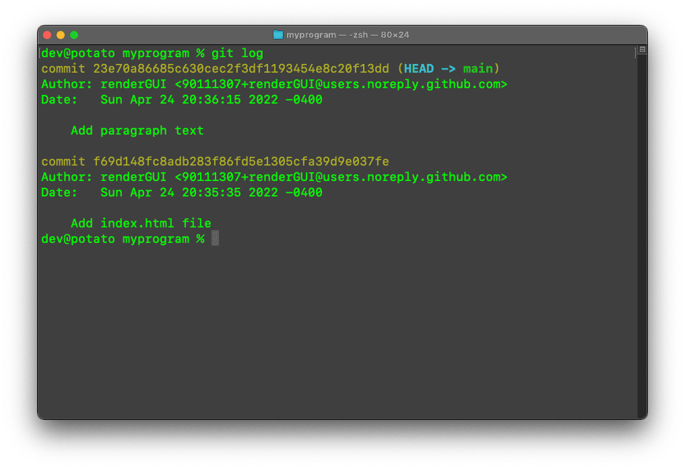
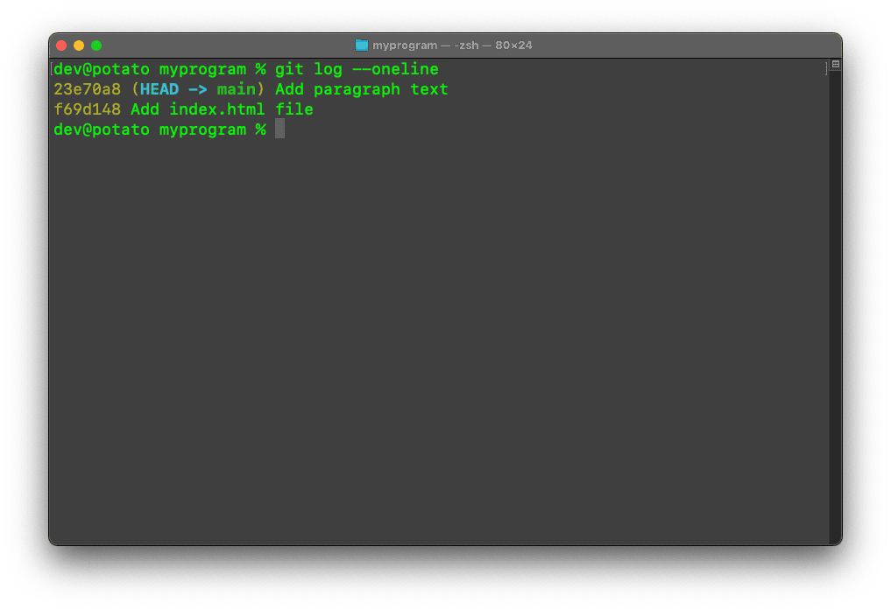

What is Git?
If you're somebody who plays video games, Git can easily be defined with one word: checkpoints. Most video games have checkpoints; whenever you die or lose, you can try again at the latest checkpoint, as opposed to starting all over from the beginning. Git works in a similar way — it tracks any changes made to your codebase and maintains a history of those changes so you can easily revert back to them. In essence, it's a version control system.
Additionally, Git also serves as a way for you to collaborate on a project with other developers. As an example, let's say you have two developers working on the same project. Git allows both developers to work on the exact same project at the exact same time, with all changes being independent to their own local machine. They can then "merge" their changes together to produce a final product.
Even if you're not collaborating with others, Git is still an incredibly powerful piece of software that lets you save your code in a manageable and easily-accessible way. Furthermore, knowing how to use Git is a great skill to have, especially if you plan to have a career as a developer. By the end of this guide, you should be familiar with the basics.
Installing Git
This guide will mainly be targeted towards macOS users; the process is slightly different for Windows users. Before you can actually use Git, you need to install it on your machine. There's a few different ways to install Git, but in my opinion, the easiest is through Homebrew. Homebrew is a package management system that simplifies the installation of software on macOS. To install Homebrew, open up the Terminal and paste this into the command line:
$ /bin/bash -c "$(curl -fsSL https://raw.githubusercontent.com/Homebrew/install/HEAD/install.sh)"
...now that you've successfully installed Homebrew, you can install Git...
$ brew install git
...make sure Git has successfully been installed by checking the version...
$ git --version
...all done!
Configuring Git
Once Git is installed, you need to set up a username and email. This helps Git keep track of who's making changes. To set a username, type this into the command line:
$ git config --global user.name {yourusername}
...enter your desired username, omitting the curly braces. Setting up your email is similar...
$ git config --global user.email {youremail}
...your username and password should now be set. You can check these at any time by typing this into the command line...
$ git config --list
...this will display your current username and password.
Using Git
Whenever you're working with Git, most of the time it'll be through the CLI (command line interface). Once you start learning backend technologies, you'll find yourself using the Terminal quite frequently, so learning basic CLI commands is a crucial part of being a developer. If you don't know how to use a CLI, I highly recommend this MDN Web Docs article, which covers the basics.
Before you start using Git, you need to understand a few terms and what they mean; the first of these terms is a "repository". In Git, a repository
is a container for a project you want to track. Let's say you have a folder that contains an .html and
.css file. In order for Git to track any changes, you would initialize a repository in this folder.
Another Git term you need to be familiar with is a "commit". A commit is a checkpoint. You can add a commit at any point throughout your project, and Git will capture a "snapshot" of that current state. If you ever want to go back to that state, you can. You can have as many commits as you want and easily go back to any of them by checking your commit history.
Typically, changes in a Git repository go through three phases: modified, staged, and committed. Whenever you make any changes to any file in a Git repository, it's considered modified. Once modified, you can put it in the "staging" area. Staging a file simply means that you're preparing it for a commit. Before any change can be committed, it must first be staged. To put it simply, the staging area is just a waiting room for any changes you want to commit.
Finally, you have branches. A branch is just a separate version of your Git repository that diverges from the main working project. If you want to test out a new feature for your project, you might create a branch in order to "branch off" from your main project and test those features without worrying about affecting your main branch. If you decide to implement these features in your main working project, you can choose to "merge" those branches together. Whenever you initialize a git repository, you usually have one branch, often referred to as the "master" or "main" branch.
Initializing a repository
Now that I've explained how Git works, I'll show you how to initialize a repository. Initializing a repository is super simple. First, go
to directory where you wish to initialize your repository. For this example, I want to initialize a repository in a folder called
"myprogram", which contains a single .html file. Once in the directory, type this into the command line:
$ git init
...and that's it, you just initialized a Git repository! Any changes made to files inside this folder will now be tracked. Currently, I only
have an index.html file inside the "myprogram" folder, so if I were to make any changes to that file, such as insert
an h1 header, Git would track this change.
Staging files
Once you're ready to commit (save) your changes, they must first be added to the staging area. To check all your untracked changes, type this into the command line:
$ git status
...this will display the state of the working directory, as well as the staging area. To add files or changes to the staging area, type this into the command line...
$ git add {filename}
...adding files to the staging area one at a time can be daunting. Alternatively, you can add everything to the staging area at once...
$ git add .
...now, any changes in the staging area are ready to be committed.
Making commits
After your changes are in the staging area, they can be committed. Remember, a commit is like a "checkpoint", and once you make a commit, it gets added to the commit history. To make a commit, type this into the command line:
$ git commit -m "{commitmessage}"
...the -m flag stands for "message", and it's used for adding a commit message to a commit. A commit message should
usually be a short sentence describing the changes made. Writing good commit messages makes it easy for other developers to understand the changes
you made. If you're interested in learning more about writing proper commit messages, I highly recommend checking out this
article.
Once you've made a few commits, you can check your commit history by typing this into the command line:
$ git log
...this will returned a detailed view of your commit history...
...here, you can see who made the commit, when the commit was made, and what the commit was. Most of the time, you'll have multiple commits, so the commit history will probably be hard to read. Luckily, there's a command for showing a much more compact view of the commit history...
$ git log --oneline
...which outputs this instead...
...now, each commit is displayed on one line. Much cleaner, right?
Branches
Whenever you initialize a repository, the default branch will always be the master ("main") branch. Any changes and commits you make take place on this branch. Typically, the master branch should hold all your stable code. If you're doing development work that's risky and experimental, it might be a good idea to create another branch. When you create a branch, you "branch" away from the main codebase into a separate environment where you can test out anything without worrying about affecting the master branch. If you're content with the changes on that branch, you can merge those changes into the master branch.
To create a new branch, type this into the command line:
$ git branch {branchname}
...this creates a new branch but doesn't switch to it. To switch branches, type this into the command line...
$ git checkout {branchname}
...this will switch you to the specified branch. Alternatively, you can create a branch and switch to it at the same time with a single command...
$ git checkout -b {branchname}
...viewing a list of all your branches is simple as well...
$ git branch -a
...lastly, you can also delete branches. In order to delete a branch, you must first be on the master branch, which you can "checkout". Once on the master branch, specify which branch to delete...
$ git branch -D {branchname}
Merging branches
Once you're satisfied with the features on your other branch, you can merge those changes into the master branch. In order to merge, you must first be on the branch you want to merge into, which in this case is the master branch. Once you're on the master branch, type this into the command line:
$ git merge {branchname}
...this command will merge the specified branch into the master branch. git merge commits automatically, so
all your changes will be saved.
Well, that covers it! Those are the most frequently-used Git commands you need to know. Once you learn these fundamentals, you should be able to initialize and manage your own repositories. Furthermore, learning Git opens the door for Github, which is a Git repository hosting service where you can share your projects with others, as well as contribute to open-source projects!